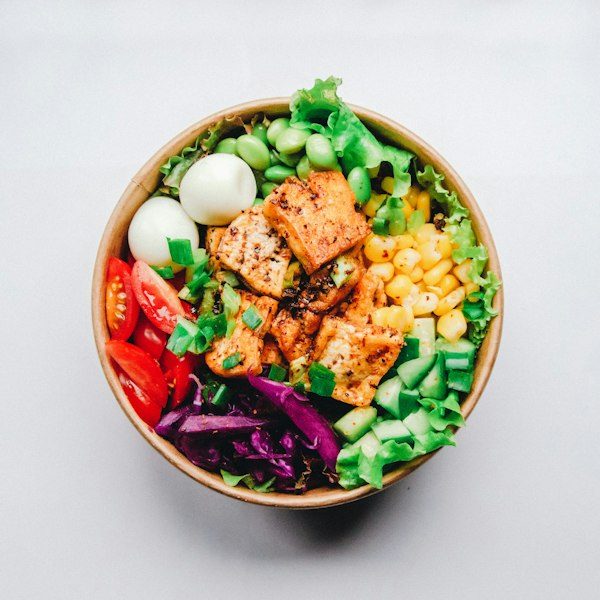

Gợi ý cho bữa tối15 phút chuẩn bị
Hôm nay ăn gì, đi chợ mua bao nhiêu?
Bếp giúp bạn hình dung một kế hoạch vừa vặn — từ khoản tiền đầu tháng đến bữa cơm mỗi ngày.
Ăn có kế hoạch. Tận dụng có ý thức.

500.000đcho 10 ngày
Thực đơn, khoản chi và những gì còn trong tủ lạnh —
nhìn cùng nhau mới dễ lên kế hoạch.

| Ngày | Dự chi | Thực chi |
|---|---|---|
| Ngày 1 | 50.000đ | 47.000đ |
| Ngày 2 | 50.000đ | 43.000đ |
Dùng đúng lúc, bớt bỏ quên.
Rê chuột hoặc chạm vào từng phần để xem chi tiết.
500.000đ cho cả kế hoạch
Định mức hôm nay: 51.250đ
Ngày thứ 3 trong kế hoạch 10 ngày
Không cần bắt đầu với một kế hoạch hoàn hảo.
Chỉ cần biết mình có gì, và muốn ăn trong bao lâu.
Chọn ngân sách, số ngày và số bữa. Nhìn thấy định mức trước khi chọn món.
Thiết lập kế hoạchXem thực đơn và danh sách cần mua, đã tính đến nguyên liệu còn dùng được.
Xem danh sách đi chợCập nhật tiền thực chi và phần nguyên liệu dư để chuẩn bị cho ngày tiếp theo.
Khám phá nhật kýVào Bếp xem một ngân sách được nối với thực đơn và tủ lạnh như thế nào.
Bắt đầu từ ngân sách của bạn, chọn món mình thích và tận dụng những gì đang có.